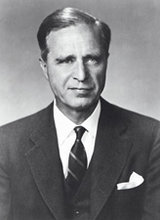

The Supremacists
by Elias Alias * July 31, 2005
Just prior to the 2005 school board election in Bozeman, Montana, a young man who proclaimed membership in the “National Alliance” announced his intent to run for the school board. His name is Kevin McGuire. His announcement for candidacy sent understandable waves of shock through many communities and circles in Bozeman and the Gallatin Valley. Mr. McGuire's affiliation with the National Alliance pricked a nerve at the core of Southwest Montana's society and culture.
To my understanding, Mr. McGuire's role within the Bozeman community has a more sinister, and deeper, origin than the surface-level appearance of racist-supremacist motives of the National Alliance. Yet as I listened from the sidelines to the raging public debate about this man's impact on our mutual society here, I began to realize that most of my neighbors in Gallatin Valley are very unaware of the darker roots from which the National Alliance and Mr. McGuire have blossomed into the public eye.
Mr. McGuire's particular views on “racial purity” have roots which shall surprise many citizens here in Montana. Those roots trace back in time farther than Adolph Hitler. They trace back in time to the American families who contributed to the building of Adolph Hitler's Third Reich and the Nazi movement. That is another piece of 'inconvenient history' of which many residents of the Gallatin Valley remain uninformed - the fact that Wall Street greed-mongers and monopoly-capitalists financed Hitler's rise to power. (There is a difference between monopoly-capitalism and pure capitalism.)
The reason why most Montanans, and indeed most Americans, are not aware of that obscure fact has to do with the National Education Association and its running mate, the Council on Foreign Relations - but that is another topic for a different probe into American history, so we shall here confine ourselves to the roots of racism as brought forward by Kevin McGuire's bid for a seat on the School Board.
Those roots also, unfortunately, trace back to President George Walker Bush's grandfather and his circle of business associates and friends. President George Walker Bush's grandfather was Prescott Sheldon Bush, son-in-law of George Herbert Walker and business partner with Averell Harriman and E. Roland Harriman, owners of the Harriman banking conglomerate on Wall Street, which trades today on the NYSE as Brown Brothers Harriman.
A brief Google search for the Harriman Brothers and the Eugenics movement of the early 1900s will reveal the historic involvement of George Herbert Walker, Prescott Bush, and the Harriman family in the American Eugenics movement – and their relationships with Adolph Hitler's Nazi movement. Many U.S. corporations, such as IBM, General Electric, Ford Motor Company, and the Rockefeller-owned Standard Oil empire played a major hand in financing the building of the logistical, financial, material, industrial, scientific, social, and philosophical infrastructures of Hitler's Third Reich – and the global eugenics movement which was used by Adolph Hitler and Ernst Rudin. The powers of Wall Street, under subtle but powerful British banking influence, forged and fashioned the build-up of Nazi Germany under Hitler. Deliberately.
Hitler's program of eugenics was headlined by the term “racial purity”. He derived much of this concept from British and American eugenicists, who's work was financed largely by British and American banking and financial entities. Those "financial entities" are generally known as "the money trust" or "the money power" or in a loosely-held sense of the term, "the invisible government". Sadly, as the roots of racism flourished on Wall Street, the eugenics fad here in America found holdings in some state governments, as evidenced by the following:
Mr. Tony Platt, emeritus professor of social work, California State University Sacramento, is a member of the editorial board of Social Justice and author of books and articles on U.S. history and social policy. His current research interests include the history of eugenics in California. "To Stem the Tide of Degeneracy: The Eugenic Impulse in Social Work" - co-authored with Amy LaPan - will be published in Stuart Kirk (ed.), Mental Health and the Social Environment: Critical Perspectives (Columbia University Press).
Following are excerpts from the remarks Mr. Platt made to the California senate judiciary committee, June 24, 2003, regarding senate resolution no. 20 - relative to eugenics.
“Since the spring 2002, state governments in Virginia, Oregon, and South Carolina, have published statements of apology to tens of thousands of patients, mostly poor women, who were sterilized against their will in state hospitals between the 1900s and 1960s. In March 2003, Governor Davis and Attorney General Lockyer added their regrets for the injustices committed in the name of 'race betterment'. Now, the California Senate is considering a resolution, authored by Senator Dede Alpert (D-San Diego), which 'expresses profound regret over the state's past role in the eugenics movement' and 'urges every citizen of the state to become familiar with the history of the eugenics movement, in the hope that a more educated and tolerant populace will reject any similar abhorrent pseudoscientific movement should it arise in the future'.
“What might such a history lesson teach us? ...
“...that the eugenics movement, which emerged in Europe and the United States around the turn of the last century, was rooted in assumptions about the existence of distinct biological races, with "Anglo-Saxon" societies as the civilizing bedrock of modernity. Supporters of eugenics advocated policies of segregation and apartheid in order to protect the 'well born' from contamination. Its leaders believed that a variety of social successes (wealth, political leadership, intellectual discoveries) and social problems (poverty, illegitimacy, crime, mental illness, and unemployment) could be traced to inherited, biological attributes associated with 'racial temperament'. 'Is there any other conclusion', asked a popular 1926 textbook (co-authored by a leading California eugenicist), that 'the Negro lacks in his germ plasm excellence of some qualities which the white race possess, and which are essential for success in competition with the civilizations of the white races at the present day?' Eugenics also targeted poor whites, especially in rural areas, on the grounds that they constituted a distinct and 'degenerate' racial typology.
“... that under the banner of 'national regeneration', tens of thousands, mostly poor women, were subjected to involuntary sterilization in the United States between 1907 and 1940. And untold thousands of women were sterilized without their informed consent after World War II. Under California's 1909 sterilization law, at least 20,000 Californians in state hospitals and prisons had been involuntarily sterilized by 1964. California, according to a recent study, 'consistently outdistanced every other state' in terms of the number of eugenic sterilizations. In the 1910s and 1920s, men were as likely to be sterilized as women were, but by the 1940s restrictions on reproductive choice were aimed at women.”
(end excerpted comments to California Senate Judiciary Committee by Mr. Platt.) Entire article, with link to full text, is here: http://hnn.us/articles/1551.html
~
The roots of the concept of eugenics run back into the 1800s as a spin-off of the work of Charles Darwin as viewed by elitist pro-Marxian monopoly-capitalists such as the families of J. D. Rockefeller and J. P. Morgan. By the 1920s, many fashionable Americans were involved in the world-wide eugenics movement. Thus we now understand that the racism of the National Alliance and Mr. Kevin McGuire, as it survives today, has its roots in the early 20th Century financial elite of Wall Street.
If that seems difficult to comprehend all one need do to discover the truth of the matter is to order one's own copy of a book by Henry Ford, Sr. That book is entitled: The International Jew: The World's Foremost Problem. It was personally written by Henry Ford, Sr. On the cover of the book's newest edition is printed: "Being a Reprint of a Series of Articles Appearing in The Dearborn Independent From May 22 to October 2, 1920". The book has been reprinted in 2004 by Liberty Bell Productions, PO Box 890, York, SC, 29745; www.libertybellpublications.com ; 803-684-4408; ISBN: 1-59364-018-8.
I shall spare readers here any samples from that book at this time, but I can assure you that the racism and supremacist language in that book is blatant, candid, and horribly ugly . But I should note for you that the book was dispersed to the Nazi command from a table at Hitler's headquarters where the book was kept in multiple stacks. Hitler wanted his Nazi officers to read it. It was first published in book form in November, 1920. Of related interest, a portrait of Henry Ford adorned a wall at Hitler's headquarters.
Another example of Wall Street complicity with Hitler's Nazi movement is the fact that through-out the 1930s the Rockefeller-owned Standard Oil of New Jersey (today named EXXON) complied in patent-sharing with I.G. Farben of Nazi Germany, whereby Standard Oil provided Hitler's Third Reich with the capability of manufacturing synthetic oil from coal - a process owned in America by Standard Oil. That, incidentally, is the very process which illumined Montana Governor Brian Schweitzer's imagination regarding alternative plans for bypassing imported oil, as he announced in 2005. The process predates Hitler's rise to power.
But we are focusing primarily with our current President's grandfather, Prescott Bush and his circle of friends and business associates.

Prescott Sheldon Bush, Skull and Bones, Harriman Brothers Executive, Hitler financier
Prescott Bush married the daughter of George Herbert Walker, for whom he named his son. George Herbert Walker was a Wall Street businessman in partnership with Averell Harriman and his brother, E. Roland Harriman. Together they operated Harriman Brothers, and it was into Harriman Brothers that George Herbert Walker invited his new son-in-law, Prescott Bush. Soon Harriman Brothers opened an "umbrella" bank named Union Banking Corporation, which was run by Prescott Bush and some of Fritz Thyssen's Nazi operatives. That bank, under Prescott Bush's leadership, was seized by the U.S. government under the Trading With The Enemy Act on October 20, 1942, many months after the U.S. had declared war against Nazi Germany. That untidy little fact of history shows clearly that Prescott Bush's, George Herbert Walker's, and the Harriman brothers' intent with the Nazis went beyond simple profit-making.
In 1929 Harriman bank bought Dresser Industries, a pipeline-coupler supplier
to Standard Oil of New Jersey and other companies. Prescott Bush became a
director at Dresser Industries. William S. Farish was the main organizer of
Humble Oil of Texas, which he helped merge into Standard Oil of New Jersey.
Farish created the pipeline and refinery industry in Texas.
In the wake of the 1929 market crash, the Walker-Harriman bank merged with Brown
Brothers in 1931. A former Brown partner, Montagu Norman, and his protege,
Hjalmar Schacht, were involved in preparing the Hitler regime for Germany. Let
us read from....
http://archives.econ.utah.edu/archives/a-list/2003w49/msg00037.htm
~ (begin quoted passages from link) ....The most important political event in those preparations for Hitler was the infamous "Third International Conference on Eugenics", held in New York's American Museum of Natural History August 21-23, 1932, supervised by the International Federation of Eugenics Societies. This meeting took up the stubborn persistence of African-Americans and other allegedly 'inferior' and 'socially inadequate' groups in reproducing, expanding their numbers, and amalgamating with others. It was recommended that these 'dangers' to the 'better' ethnic groups and to the 'well-born', could be dealt with by sterilization or 'cutting off the bad stock' of the 'unfit'.
Italy's fascist government sent an official representative. Averell Harriman's sister Mary, director of 'Entertainment' for the Congress, lived down in Virginia fox-hunting country; her state supplied the speaker on 'racial purity', W.A. Plecker, Virginia commissioner of vital statistics. Plecker reportedly held the delegates spellbound with his account of the struggle to stop race-mixing and inter-racial sex in Virginia.
The Congress proceedings were dedicated to Averell Harriman's mother; she had
paid for the founding of the race-science movement in America back in 1910,
building the Eugenics Record Office as a branch of the Galton National
Laboratory in London. She and other Harrimans were usually escorted to the horse
races by old George Herbert Walker--they shared with the Bushes and the Farishes
a fascination with 'breeding thoroughbreds' among horses and humans.
Averell Harriman personally arranged with the Walker/Bush Hamburg-Amerika Line
to transport Nazi ideologues from Germany to New York for this meeting. The most
famous among those transported was Dr. Ernst Rudin, psychiatrist at the Kaiser
Wilhelm Institute for Genealogy and Demography in Berlin where the Rockefeller
family paid for Dr. Rudin to occupy an entire floor for his eugenics 'research'.
Dr. Rudin had addressed the International Federation's 1928 meeting, speaking on
'Mental Aberration and Race Hygiene', while others (Germans and Americans) spoke
on race-mixing and sterilization of the unfit. Rudin also led the German
delegation to the 1930 Mental Hygiene Congress in Washington, D.C.
At the Harriman's 1932 New York Eugenics Congress, Ernst Rudin was unanimously
elected president of the International Federation of Eugenics Societies. This
was recognition of Rudin as founder of the German Society for Race Hygiene, with
his co-founder, Eugenics Foundation vice-president Alfred Plotz.
As depression-maddened financiers schemed in Berlin and New York, Rudin was now
official leader of the world eugenics movement. Components of this movement
included groups with overlapping leadership dedicated to: *sterilization of
mental patients ('mental hygiene societies'); *execution of the insane,
criminals and the terminally ill ('euthanasia societies'); and *eugenical race
purification by prevention of births to parents from 'inferior' blood stocks
('birth control societies');
Before the Auschwitz death camp became a household word, these
British-American-European groups called openly for the elimination of the
'unfit' by means including force and violence.
(end quoted passages from above link)
~
However interesting it may be to some of us that our current President's
grandfather was one of Hitler's biggest bankers involved in Hitler's rise to power and in the “racial purity”
eugenics movement, there are two distinct perspectives from which we may today
view the facts of the Bush family's history. This article is in no way meant to
be a definitive history of the Bush family; but I do think that the
accomplishments of Prescott Bush should be included with any expose of his
less-than-admirable accomplishments in funding the Nazi movement and the
eugenics movement. From Wikipedia we find the following, which we feel bears up
under inspection of corporate records and public records.
~
(begin Wikipedia excerpts)
[Prescott] Bush was born in Columbus, Ohio to Flora Sheldon and Samuel P. Bush, a steel company president and later a U.S. government official in charge of coordination and assistance to major weapons contractors during World War I.
After attending the Douglas School in Columbus and St. George's School in Newport, Rhode Island from 1908 to 1913, [Prescott] Bush entered Yale University. There, he played varsity golf, football, and baseball, and was president of the Yale Glee Club. (He was the best close-harmony man in the class of 1917). His devotion to singing at Yale would remain strong his entire life, evidenced in part by his founding of the Yale Glee Club Associates, an alumni group, in 1937. On May 18, 1916 he was "tapped" to join the Skull and Bones society at Yale. Other new "Bonesmen" that year were E. Roland Harriman, H. S. Fenimore Cooper (grandson of James Fenimore Cooper), Knight Wooley (son of Ulysses Grant Wooley), Ellery James, and Henry Neil Mallon. A Skull and Bones legend tells of Bush digging up the skull of Geronimo (1918) and "donating" it to the society.
After graduation, he served as a field artillery captain with the American Expeditionary Forces (1917-1919) during World War I. He received training in intelligence at Verdun and was briefly assigned to a staff of French officers. Alternating between intelligence and artillery, Bush came under fire in the Meuse-Argonne offensive. He wrote home about receiving medals for heroic exploits that were published in the Columbus newspapers only to be retracted a few weeks later when it was revealed that he, in fact, had not received such medals.
After his discharge in 1919, Bush went to work for the Simmons Hardware Company in St. Louis, Missouri.
He married Dorothy Walker, George Herbert Walker's daughter, on August 6, 1921, and together they had five children, including George H. W. Bush (named after George Herbert Walker), Prescott Bush, Jr., Jonathan Bush, William Bush, and Nancy Bush. Among those attending the Kennebunkport, Maine wedding ceremony were Isabel Stillman Rockefeller (daughter of Percy Rockefeller), Hope Lincoln, Mary Keck, Elizabeth Trotter, Martha Pittman, Ruth Lionberger, Nancy Walker, George Herbert Walker, Knight Wooley, Frank Shephard, John Shepley, Richard Bentley, Henry Isham, William Potter Wear, and Henry Fenimore Cooper.
The Bushes moved to Columbus, Ohio, in 1923, where Bush worked for the Hupp Products Company, where his business efforts generally failed. He left in November 1923 to become president of sales for Stedman Products of South Braintree, Massachusetts. Seven months later, on June 12, 1924, future President George H. W. Bush was born. In 1925, he joined the United States Rubber Company (based in New York City) as manager of the foreign division, and moved to Greenwich, Connecticut.
His father-in-law, George Herbert Walker, and Walker's partner, Averell Harriman, brought him on as an officer in their investment banking firm, W. A. Harriman and Company in 1926. When it merged with Brown Brothers Harriman in 1931, he became a partner in the new firm of Brown Brothers Harriman. Bush called it "my good fortune" to work with close friends, including Yale classmates (and members of the Skull and Bones) E. Roland Harriman, Knight Woolley, and Ellery James, as well as Robert A. Lovett and Thomas McCance.
As a managing partner of Brown Brothers Harriman, he sat on several corporate boards, including the following:
He was a member of the Executive Committee of the United States Golf Association (USGA) from 1928-1935, serving successively as Secretary, Vice President and President. The USGA sponsors the Walker Cup Match, which is named after George Herbert Walker, who was the organization's president in 1920, when it originated.
In the 1940s, he was national campaign chairman of the United Service Organizations and National War Fund.
(end excerpts from Wikipedia at above link)
~
Matching honorable with dishonorable activities, we see that our George Walker Bush's grandfather was quite busy in many arenas, as men who would shape history invariably must be. While this article is making no claims of criminality on Prescott Bush or his family members and heirs, I do feel that the Bush philosophy included some less-than-honorable notions. Bush family defenders simply write off Bush's Nazi-related activities as being logical business associations of an eager Wall Street profit-seeker. But there is strong evidence which suggests that Prescott Bush was an avid eugenicist.
“He was an
acquaintance of Margaret Sanger, founder of Planned Parenthood and a
self-declared eugenicist. Margaret Sanger is on record favoring infanticide,
compulsory sterilization, and (arguably) genocide. In fact, Prescott Bush served
as Treasurer for Planned Parenthood's first national fund-raising campaign in
1947.” (quote from above Wikipedia link)
The triptych of Bush, Walker, and Harriman “arranged the Third International
Eugenics Conference in New York, where Hitler's leading race scientist, Dr.
Ernst Rudin, was unanimously elected president of the International Federation
of Eugenics Societies. After studying the eugenics laws of California and
Virginia, which had resulted in thousands of forced sterilizations in the United
States, Dr. Rudin wrote the Nazi "Law for the Prevention of Hereditary Diseases
in Posterity," which led to thousands of forced sterilizations and millions of
exterminations in Nazi Germany.” (Wikipedia link, above)
As we in the Gallatin Valley and city of Bozeman, Montana, now know, Kevin McGuire and his National Alliance have much in common with our President's grandfather. We can only wonder if the sins of the father (and grandfather) are visited upon the son (and grandson).
But this is only one tiny facet of many through which we may reflect the light of truth upon our problems in America today. In a coming article I shall inspect the two Wall Street lawyers from Sullivan and Cromwell who did the most significant legal work for the Harriman corporations and Bush's Union Banking Corporation. These two, er, “gentlemen” are revered by today's Eastern Establishment as superb Statesmen, despite their work for the Harriman, Bush, Walker trio of pro-Hitler financiers. Only after discovering the details of the Dulles brothers' relationship with Harriman, Walker, Bush, Fritz Thyssen, and Adolph Hitler can we finally know with a certainty whether Prescott Bush was aware of the evil consequences of his business relationship with Hitler.
Unfortunately, governmental and corporate records do show that President George Walker Bush's grandfather was one of Hitler's most avid and significant bankers, and the Wall Street lawyers from Sullivan and Cromwell, Allen Dulles and John Foster Dulles, were Bush's “go-to” men for the interfacing of German, British, and American law which was necessary for the build-up of Hitler's Third Reich. But also of interest, and a point which should be kept in mind as we recall the suppressed history which can reveal the truer sources of today's social ills and governmental problems, is that Prescott Bush and the two lawyer brothers from Sullivan and Cromwell, the Dulles brothers, also worked with Montagu Norman, and his protege, Hjalmar Schacht. As we shall see in coming articles, Hjalmar Schacht would team with CFR-sponsored globalists in 1930 to establish a bank about which most Montanans have never heard, but which shields the mechanism and its minions who have got George Walker Bush in a state of conflict with the American people - the conflict between the Homeland Security attack on our freedoms and the open-borders policy of the Bush Administration. Stay tuned.
Much of this information was offered to the Bozeman Daily Chronicle in 2004 by myself, Elias Alias, but was rejected because I refused to condense it into a shorter “column-sized” presentation. Mr. Wilke, at that time in charge of letters to the editor of The Bozeman Daily Chronicle, wrote to me asking what segment of the population in the Gallatin Valley I presumed to represent. I replied to Mr. Wilke and the Bozeman Daily Chronicle that I, being a member of no political party, represent only myself – a simple man of modest means, an aging Vietnam veteran, a proud father of grown and successful individuals, an ex-businessman, a successful artist, and a lover of truth.
I assured Mr. Wilke that in my opinion, only the truth is powerful enough to set us free once again as Americans and as Montanans. I asked him to reconsider, and to allow the Bozeman Daily Chronicle to share this information with the residents of Gallatin Valley, but he was not interested in so doing.
Copyright 2005 by Elias Alias and The Jefferson River Gazette. Used with permission.